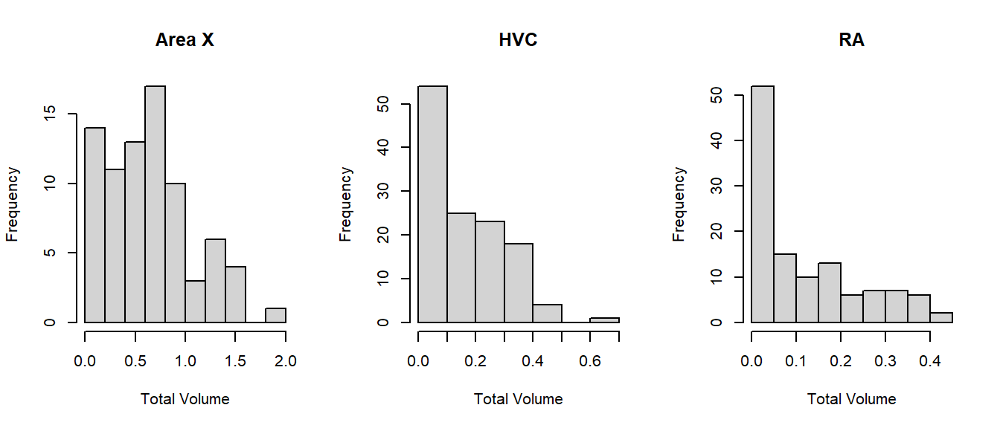

Chapter 1 Bird Song
In this chapter, an advanced analysis is shown of the volume of different areas of the bird brain related to song. Your assignment is to read the explanation, have a look at the analysis used, and then perform data cleaning on your own data. Once your data is ready, copy the analysis and write a conclusion.
1.1 Introduction
Statistical analysis is about explaining the different sources of variance. A source of variance can be of interest, like the different areas of the brain, but it can also simply be a source of potential errors, like which student is performing the measurements, or which particular bird you are measuring. By correctly accounting for the different sources of variance, we end up with a powerful model that gives trustworthy standard errors and \(p\)-values.
In this analysis I want to demonstrate three things:
- A complicated experimental design like this one requires a complicated model called a mixed model;
- Comparing the groups with a mixed model can fortunately still be fairly easy to do in R, and its results match up with the expectations.
- Data cleaning is part of every analysis, and has a great impact on the results. This is the part you will be doing by yourself. The analysis you can then copy from my example.
This chapter will demonstrate how (1) study design is a crucial part of scientific research, which dictates the type of model you should use; (2) even if you do not fully understand the (statistical) methods used in papers, you can still judge the validity of one’s approach, and read the results; (3) even simple data cleaning can be a time-consuming task that requires careful consideration of how the data came to be.
Throughout this chapter I will use example data from a different year. You data should be (more or less) the same. Any differences you can iron out in the data cleaning assignment.
1.2 A Complex Experimental Design
The experiment consisted of measuring the total volume of different parts of the brain related to song. This experimental design has two difficulties that I want to address, before showing which model I used. Hopefully that will make it clear why I used the model shown in the next paragraph, even if you are not familiar with it.
1.2.1 The Outcome Is Skewed
If a distribution has more deviations in one direction than the other, we call it skewed:
This histogram of the volume displays strong right-skew: Volumes of \(0\)–\(0.2\) are most common, \(0.2\)–\(0.4\) less common, and any larger volumes are exceedingly rare.
The model we’re going to use in the next paragraph assumes (like many statistical tests and models) that if we account for the effects of the explanatory variables, what remains should be more or less normally distributed noise. With a response variable this strongly skewed, it is unlikely that assumption will hold. Even if we split by area of the brain, the distribution of volume is still right-skewed:

Why is volume so strongly right-skewed? Because the volume grows cubically (\(x^3\)): Volume is a three-dimensional measurement, determined by the length, width and depth. Therefore, we could consider transforming the outcome as follows:
We can also split by area again and see that there is indeed no more right-skew:

1.2.2 The Measurements are Dependent
Figure 1.1: A simplified version of the experiment. Each bird has had different parts of its brain measured by different students.
Here is a very brief description of the problem and the solution:
- Most tests and models assume independent measurements;
- Each bird in the data set has been measured more than once (different brain areas). These measurements come from the same individual and are therefore, measurements of the same bird are not independent;
- In the first year’s course about statistics you learned to compare dependent data through a paired \(t\)-test. A paired \(t\)-test can only compare two sets of paired measurements;
- A more general way to deal with dependent data is through a mixed model.
- This works by estimating a random effect for birds. This is like assuming that these birds come from some larger population of birds we could have used in the experiment. Instead of estimating a separate effect for each bird, we estimate the variance between birds and subtract the effect of the individual birds from the effects of interest.
Another potential source of dependence is… you! No matter how hard we try to perform measurements according to protocol, there will always be minor, but systematic differences in the way each student performs the measurement. If each student performed one measurement, this would not pose any problem. However, as shown in figure , each student has performed several measurements. If the differences in measurement between students are sufficiently large, this poses a problem. Therefore, measurements of the same student might be correlated.
Fortunately, both problems can be tackled with the same solution: A mixed model.
1.3 Analysis With a Mixed Model
To fit a mixed model, we are going to use a package called lmerTest. The entire procedure then boils down to:
- Install package
lmerTestif you don’t have it; - Load package
lmerTest; - Fit a mixed model with
lmer();
1.3.3 Fit a Mixed Model With lmer()
Let’s call this model model1:
model1 <- lmer(Volume^(1/3) ~ Area + Hemisphere + Treatment + (1 | BirdID) + (1 | StudentID), data = Birdsong)lmeris short for linear mixed effects regression—a mixed model;Volumeis transformed as \(\sqrt[3]{x} = x^{\frac{1}{3}}\) as explained earlier;AreaandHemisphereare the effects of interest;- Using the
(1 | ...)notation, I am telling the function I want to estimate the variance between birds and the variance between students; - Using the
dataargument, I am telling the function where to find all these variables.
That’s the whole model! You might not have been able to think of that yourself, but if you understand why this particular model was used, that is more than enough.
1.3.4 Interpreting the Output
Let’s start by producing a summary of the model:
There’s a lot going on in the summary, and most of it is not relevant for this assignment. Therefore, the only thing I’ve show here is the Random effects and Fixed effects tabs.
Random effects:
Groups Name Variance Std.Dev.
StudentID (Intercept) 0.0006164 0.02483
BirdID (Intercept) 0.0053421 0.07309
Residual 0.0064676 0.08042
Number of obs: 318, groups: StudentID, 75; BirdID, 32
Fixed effects:
Estimate Std. Error df t value Pr(>|t|)
(Intercept) 0.595091 0.034643 36.805541 17.178 < 2e-16 ***
AreaHVC -0.211419 0.014083 62.855150 -15.012 < 2e-16 ***
AreaRA -0.261225 0.014406 61.958464 -18.134 < 2e-16 ***
HemisphereR 0.003952 0.010848 46.077031 0.364 0.71732
TreatmentF5 -0.039343 0.045208 26.549452 -0.870 0.39196
TreatmentF15 0.109993 0.043607 26.671033 2.522 0.01794 *
TreatmentF50 0.168776 0.045011 26.117294 3.750 0.00089 ***
TreatmentM0 0.364359 0.043560 26.567674 8.365 6.41e-09 ***Here we see that:
- Variance between students is very small (
0.0064676); - Variance between birds is comparable to the residual variance (
0.0053421and0.0064676, respectively); - The reference group (Area
RA, HemisphereL, TreatmentF0) has a \(\sqrt[3]{\text{volume}}\) of0.595091; - The HVC area has lower volume on average (
-0.211419lower thanRA); - The RA area has yet lower volume on average (
-0.261225lower thanRA); - The right hemisphere does not differ significantly from the left (difference of
0.003952, \(p\)-value of0.71732); - Treatment
F5does not differ significantly fromF0(difference of-0.039343, \(p\)-value of0.39196); - Treatment
F15has a higher volume thanF0on average; - Treatment
F50has an even higher volume thanF0on average; - Males (
M0) have yet higher volume thanF0on average.
1.3.5 Simplifying the model
So the variance between students is extremely small. This is actually good news, because it means that the measurements do not depend much at all on who is measuring. If this is also the case in your year’s data, it means your class measured consistently. Good job!
If the effect is so small, you could opt to leave out the random effect for students:
1.3.6 Decide on the right model
Lastly, we use a test to decide which of these models fits the data better:
refitting model(s) with ML (instead of REML)Data: Birdsong
Models:
model2: Volume^(1/3) ~ Area + Hemisphere + Treatment + (1 | BirdID)
model1: Volume^(1/3) ~ Area + Hemisphere + Treatment + (1 | BirdID) +
model1: (1 | StudentID)
npar AIC BIC logLik deviance Chisq Df Pr(>Chisq)
model2 10 -594.34 -556.72 307.17 -614.34
model1 11 -594.07 -552.69 308.04 -616.07 1.7325 1 0.1881First we are notified that the models were refitted using maximum likelihood. This is because measures like AIC, BIC and deviance cannot be calculated from restricted maximum likelihood (the usual fitting procedure for mixed models). In this table we see several things:
model2uses \(10\) parameters, whilemodel1uses \(11\);model2has a lower AIC (note the minus sign);model2has a lower BIC;model2has a marginally lower log-likelihood;model2has a marginally higher remaining deviance (again, note the minus sign);- A chi-squared test on these two values of the deviance produces \(\chi^2 = 1.7325\);
- This test has one degree of freedom (the difference in the number of parameters used by the models);
- The corresponding \(p\)-value for this \(\chi^2\)-test on one degree of freedom is \(p = 0.1881\);
- This is not significant at any reasonable level of significance;
That’s a lot to consider at once, and most of these terms you have probably never heard of before. Fortunately, the relevant part is the easiest to interpret: Neither model fits the data significantly better than the other (\(p = 0.1881\)).
The usual thing to do in a situation like this is to go with the model that uses fewer parameters. After all, if you can fit the data just as well with a simpler model, what is the benefit of making it more complex?
1.3.7 Interpret the final output
Random effects:
Groups Name Variance Std.Dev.
BirdID (Intercept) 0.005537 0.07441
Residual 0.007019 0.08378
Number of obs: 318, groups: BirdID, 32
Fixed effects:
Estimate Std. Error df t value Pr(>|t|)
(Intercept) 0.591845 0.034869 36.260578 16.974 < 2e-16 ***
AreaHVC -0.208483 0.012627 285.552762 -16.511 < 2e-16 ***
AreaRA -0.257411 0.012897 286.979684 -19.959 < 2e-16 ***
HemisphereR 0.003086 0.009461 284.170394 0.326 0.744541
TreatmentF5 -0.039735 0.046147 27.947606 -0.861 0.396535
TreatmentF15 0.110134 0.044503 28.051566 2.475 0.019642 *
TreatmentF50 0.170132 0.045926 27.433116 3.705 0.000944 ***
TreatmentM0 0.365201 0.044446 27.916048 8.217 6.21e-09 ***Here we see that the individual difference between birds is actually quite large: Its variance of 0.005537 is almost the same as the remaining variance after accounting for all effects of 0.007019.
We also see that the estimated effects and their significance differs very little from the previous output of model1. This is desirable, because if the difference in estimates were very large, we would have to put more thought into which model we believe to be the right one. In this case, either model gives more or less the same answer to the research question.
Moreover, as you’ll see in the assignment, the results match up nicely with what you see in the boxplots.
1.4 Assignment: Data Cleaning
So far, I have only covered the experimental design and the model used. But I left out an important part of analysis: Data cleaning.
In the example data above, there were simple errors in the data entry, a problematic outlier, and low quality data mislabeled as \(0\). Here I am going to show how you can clean your data set to make it ready for analysis.
Your assignment is to clean your own data set following the example here. When you’re done, copy the analysis shown above and write a conclusion.
1.4.1 Read the data and look at the structure
- If you haven’t already, install RStudio;
- Download the data. If it is an Excel (.xlsx) file, open it in Excel and save as comma-separated values (.csv) first;
- Open RStudio and create a new R markdown file. Save this file to the same folder as the data!
- Go to Session > Set Working Directory > To Source File Location. R now knows where to look for your data;
- Create a new code chunk and run the following code (replace the file name with your file name):
## 'data.frame': 376 obs. of 6 variables:
## $ Student_ID : int 42 42 42 42 42 73 73 73 73 73 ...
## $ Zanggebied : chr "RA" "RA" "RA" "RA" ...
## $ Hemisfeer : chr "R" "R" "R" "R" ...
## $ Vogel_ID : chr "OG164" "PK179" "PK190" "PK198" ...
## $ Totaal_volume: num 0.1104 0.0276 0.2304 0.0204 0.3012 ...
## $ Treatment : chr "NA" "F0" "F50" "F5" ...I will go over the data cleaning of the 2020 data. You can follow along with the data from your own year.
Here we see the following:
- The data is stored as a
data.frame, and consists of 376 observations of 5 variables; - Those variables are:
Student_ID: An integer value (whole number);Zanggebied: A character value;Hemisfeer: A character value;Vogel_ID: A character value;Totaal_volume: A numeric value (any number);Treatment: A character value.
1.4.2 Shorten variable names and change variable types
The first step I made is change the variable names to be slightly shorter (and in English) and convert the categorical variables to factors:
colnames(Birdsong) <- c("StudentID", "Area", "Hemisphere", "BirdID", "Volume", "Treatment")
Birdsong$StudentID <- factor(Birdsong$StudentID)
Birdsong$Area <- factor(Birdsong$Area)
Birdsong$Hemisphere <- factor(Birdsong$Hemisphere)
Birdsong$BirdID <- factor(Birdsong$BirdID)
Birdsong$Treatment <- factor(Birdsong$Treatment,
levels = c("F0", "F5", "F15", "F50", "M0"))Why does that matter? Well, have a look what happens when you check the structure again:
## 'data.frame': 376 obs. of 6 variables:
## $ StudentID : Factor w/ 75 levels "1","2","3","4",..: 38 38 38 38 38 65 65 65 65 65 ...
## $ Area : Factor w/ 5 levels "Area X","HCV",..: 5 5 5 5 5 1 1 1 1 1 ...
## $ Hemisphere: Factor w/ 2 levels "L","R": 2 2 2 2 2 1 1 1 1 1 ...
## $ BirdID : Factor w/ 69 levels "Bk 145","BK 145",..: 38 59 60 61 68 64 19 49 51 50 ...
## $ Volume : num 0.1104 0.0276 0.2304 0.0204 0.3012 ...
## $ Treatment : Factor w/ 5 levels "F0","F5","F15",..: NA 1 4 2 5 5 3 1 2 4 ...Now we see that there were apparently 75 students, and… wait, 5 areas?
## Area X HCV HVC Ra RA
## 125 5 128 1 117Ah, some people entered Ra instead of RA, and some entered HCV instead of HVC. Let’s fix their mistakes:
1.4.3 Fix errors in data entry
Birdsong$Area[Birdsong$Area == "Ra"] <- "RA"
Birdsong$Area[Birdsong$Area == "HCV"] <- "HVC"
Birdsong$Area <- droplevels(Birdsong$Area)The first two lines correct the wrong entries, and the third line removes the now unused levels Ra and HCV.
1.4.4 Plot your data
And now we’re good to go! The first thing you should do in any analysis after reading the data is to try and create one or several relevant plots of your data. No amount of looking at numbers is going to give you the same, easy insight as a figure:
We can already make several useful observations:
- Area X seems to have a larger mean1 and variance2 than the rest;
- The left and right hemispheres do not seem to differ much;
- Volume seems to increase from
F0toF5, toF15toF50, and males have even larger volume; - There is a suspiciously large value for area X of the right hemisphere (first figure). Is this an unrealistic value?
1.4.5 Inspect suspicious value(s)
Let’s inspect the suspicious value further. Since it is the largest value, I can use which.max to find it:
## [1] 53.86181This value is \(53.9 \times\) larger than the mean total volume. Keep in mind that volume is a three-dimensional measurement. It grows at a rate of \(x^3\) with the length, width and depth of the brain. Therefore, at least some extreme observations are expected… So let’s use a transformation that accounts for this:
Even with a transformation of \(\text{volume}^\frac{1}{3}\), the suspiciously large value still sticks out quite a lot.
1.4.6 Remove unrealistic value(s)
It is hard to say what this value is supposed to be. It could have been a misplaced decimal separator, but should it then be \(1.4292\), or \(0.14292\)? Since we cannot say for sure what it should have been, let’s omit this observation from further analysis:
If this analysis were to be used in a publication, we would have to go further: How much does this observation affect the results? Can we use a form of multiple imputation to fill in the missing value we have now created? But for now we’ll leave it at this.
Let’s create the boxplots again to see what the data look like without the suspicious value:

This looks far more reasonable. Now let’s address the next elephant in the room: There appears to be far greater variance in the volume of area X, than in RA or HVC. But notice how measurements of zero almost exclusively occur in area X. We can confirm this as follows:
## Birdsong$Area: Area X
## [1] 45
## ------------------------------------------------------------
## Birdsong$Area: HVC
## [1] 8
## ------------------------------------------------------------
## Birdsong$Area: RA
## [1] 0How do we deal with this? There are several ways to do so, and the best way depends on the problem being studied, as well as the reason for measurements being \(0\). We could, for example, consider these zeroes to be ‘censored’, meaning that they are not actually zero, but just too small to be picked up by the measurement. These kinds of considerations are what make statistical modeling difficult.
1.4.7 Remove values incorrectly marked “0”
Fortunately, the cause of the zeroes was in most cases simply a low quality sample, unrelated to the actual volume. It is still suspicious that this happened considerably more often in area X than elsewhere, but for the purpose of this exercise let’s consider these measurements to be missing completely at random. Whatever they were, they weren’t \(0\), and this is skewing the results strongly otherwise.
Therefore, in the next step we set these values to ‘not available’ (NA):
One final time we inspect the boxplots:
And now we have a fairly good idea of what we should expect in the results: HVC is lower than area X, and RA is even lower. The difference between hemispheres is extremely small and unlikely to be picked up by the model.
1.4.8 Other changes
Are there any other strange values, incorrect labels, or other problems in your version of the data set? Adjust the data in R as you see fit before moving on to the analysis.
1.4.9 Run the analysis
Once you’re over here, you can copy the models I’ve shown above:
model1 <- lmer(Volume^(1/3) ~ Area + Hemisphere + (1 | BirdID) + (1 | StudentID),
data = Birdsong)
model2 <- lmer(Volume^(1/3) ~ Area + Hemisphere + (1 | BirdID),
data = Birdsong)Do both models run without errors? Can you compare the models like shown before? What do you conclude from the output?